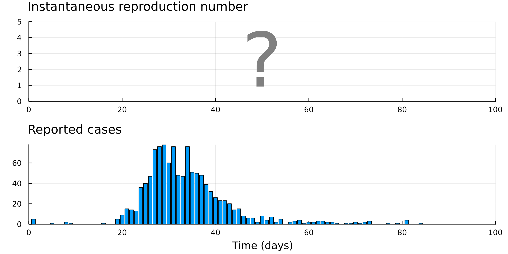

SMC and epidemic renewal models
This is a very early beta version of this site and will change significantly over the coming months.
Comments, suggestions, and feedback are very welcome and can be sent to: nicholas.steyn@univ.ox.ac.uk. Please also get in touch if you would like to collaborate!
Please see the working paper for a more complete (if brief) overview of the topics that will be covered here.
Welcome
Renewal models are popular in statistical epidemiology for their use as a semi-mechanistic model of disease transmission. We demonstrate how sequential Monte Carlo (SMC) methods can be used to perform inference on and generate projections with these models.
With these methods one can:
- Estimate \(R_t\) from imperfect data, or from multiple sources of data
- Produce well-calibrated short-term projections
- Estimate abrupt change-points in disease transmission
- … and so much more
This approach:
- Is simple, intuitive, and flexible
- Produces valid credible intervals on quantities of interest
- Can simultaneously account for reporting biases, aggregated/missing data, imported cases, multiple data sources, and more.
- Uses entirely standalone code (i.e. no external packages or software are required)
- Can handle a mixture of continuous and discrete variables (where Stan requires only continuous variablese)

Renewal models underlie many of the most popular methods for reproduction number estimation, including EpiEstim (Cori et al. 2013) and EpiNow2 (Abbott et al. 2020). They have also been used to model elimination probabilities (Parag, Cowling, and Donnelly 2021), estimate the effect of non-pharmaceutical interventions (Flaxman et al. 2020), and produce forecasts (Banholzer et al. 2023), for example.
Structure of this website
This website is made up of a collection of Jupyter-style notebooks. All code is implemented in Julia, a programming language with the speed of C++ and simplicity of R and Python. The notebooks are organised into chapters:
- Introduction: We introduce key concepts such as the renewal model and hidden-state models. Those already familiar with these concepts can safely skip these pages.
- Sequential Monte Carlo: We introduce specific SMC methods. This includes defining the bootstrap filter and particle marginal Metropolis Hastings.
- Models: A collection of epidemic models accounting for various statistical artefacts. The focus in this chapter is on \(R_t\) estimation.
- Prediction: We use the models developed to produce short-term forecasts, estimate the probability of elimination, and estimate missing data.
- Inference: #TODO
- Evaluation: We introduce key metrics for model evaluation, including scoring rules, KL-divergence, and TBC.
- Other methods: We compare our methods to popular alternatives in the literature. Where possible, Julia implementations are provided for these.
Using Julia
We recognise that Julia is not widely used in epidemiology. While we would love to implement our methods in R, they would be extremely slow without a C++ backend. Instead, our methods are all natively implemented in Julia and require no external software - making the entire process much simpler!
Getting started with Julia is easy (see below) and our examples are written for those with no prior knowledge of the language.
Getting started
We do not use any external dependencies, so you can run all code in this repository with a standard Julia installation. To get started, all you need to do is:
- Install Julia from julialang.org
- Clone this repository
- Start Julia in your terminal and run:
using Pkg
Pkg.add("IJulia")
using IJulia
notebook()This will open a Jupyter notebook in your browser. Navigate to the GitHub repository and open main.ipynb to get started.
Alternatively, you can open the cloned repository in VS Code (or your preferred IDE) and run the notebooks this way. If using VS Code, we recommend installing the Julia extension.
GitHub layout
The files and folders you should care about:
/notebooks/: Contains the main tutorial notebooks/src/: Contains important source code/data/: Contains all example data used in the tutorial
You can ignore (but feel free to explore):
/paper/: Scripts and outputs associated with the accompanying paper/docs/: Contains the rendered tutorial/site/: Contains the quarto website files (these are rendered to/docs/)/assets/: Contains images and other assets used in the tutorials and readme files- and files like
.gitignoreand.nojekyllwhich are for repo management